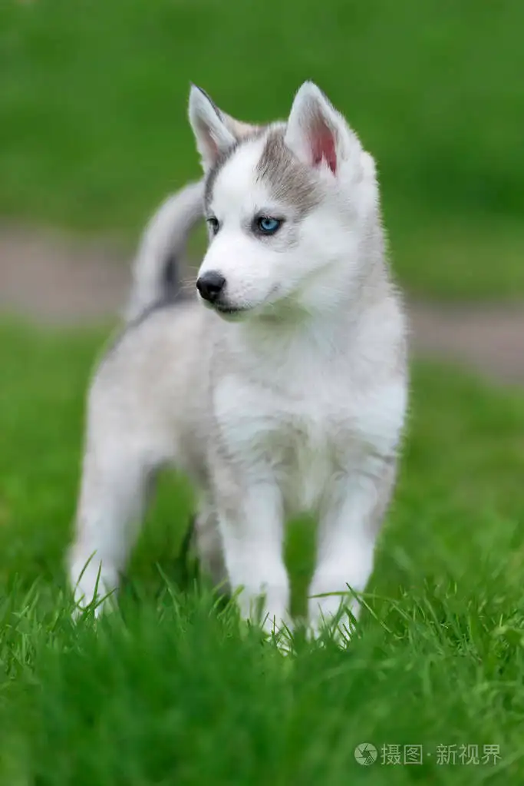

- 首页
- 领养
- 寻宠
- 宠物百科
- 个人中心
- 消息提醒
|  |
宠物大全 宠物饲养 宠物日常 宠物疾病 |
热门资讯
狗狗易患的传染病，常见的有犬瘟细小、犬冠状等，常见的临床表现为：发热、不进食、呕吐腹泻、嗜睡、呼吸困难、便血、脓性眼屎、干鼻头、爪子皴裂等症状。一般这一类传染性致命疾病，多发在狗狗离乳期、或者是1岁左右，幼犬易染率高，治愈率较低，且容易留下后遗症。 如何预防： 在接狗狗回家的时候，建议铲屎官选择正规途径挑选狗狗，按时给狗狗接种疫苗，家里也要做好定时消毒，未接种完疫苗不要带狗狗外出遛弯，不要接触陌生狗狗，不要让别人随便触碰狗狗口鼻。
正常情况下是可以在一起饲养的。但是有一些情况需要注意，首先，要尽量选择攻击性低，性格温和的犬猫品种。其次最好是养年龄相近的猫狗，从小就一起饲养，当动物之间互相熟悉了对方的味道，相对来说就不会有很强的攻击性。一旦发现有打架攻击的倾向，就要隔离开，分开饲养。最后，要注意将犬猫的粮食分开饲喂，防止出现猫咪偷吃狗粮，狗狗偷吃猫粮的情况。可以将猫咪的饭碗放到台子上，这样狗狗就够不到了。还要注意狗狗是否会偷吃猫砂，如果狗狗食入大量的猫砂会引起消化道的问题。最后定期带它们注射疫苗，定期进行体内外的驱虫，多和它们沟通感情。